Modern Vision Architectures
Chapter 8 · Designing depth, information flow, and reuse
PART V · LEARNING FROM IMAGES

Chapter 7 established the basic convolutional vocabulary: local filters, channels, nonlinearities, pooling, and receptive fields. This chapter asks the next design question: how should those operations be organized when a vision model must become deeper, more expressive, and still trainable?
The named architectures are historically important, but the durable objective is not to memorize five model names. It is to extract reusable mechanisms—repeat, mix channels, branch, add, and concatenate—and learn to compose them around a task specification.
By the end of this chapter, you should be able to
- Explain why depth is an architectural and optimization decision, not merely a layer count.
- Construct VGG-style repeated convolutional blocks from a compact configuration.
- Explain how NiN uses \(1\times1\) convolutions and global average pooling.
- Trace all four branches of an Inception block and account for its output channels.
- Distinguish identity and projection shortcuts in a residual block.
- Explain DenseNet growth rate, transition compression, and activation-memory cost.
- Translate each architecture diagram into PyTorch code.
- Combine mechanisms from several architecture families to satisfy one task specification.
1 Why architecture becomes a design problem
Consider scaling a familiar CNN from a small dataset to ImageNet-scale recognition. The input becomes larger, the number of classes grows, and the visual variation becomes much broader. Repeating the same convolution–activation–pooling recipe is tempting, but three pressures appear quickly:
| Pressure | What can go wrong? | Architectural question |
|---|---|---|
| Spatial resolution | Aggressive pooling erases small structures early. | Where should downsampling occur? |
| Parameter allocation | Wide kernels and dense heads dominate the budget. | Where should capacity be spent? |
| Information flow | A deeper plain chain becomes harder to optimize. | How can earlier signals reach later layers? |
Architecture is therefore part of the hypothesis. It decides which computations are easy to express, which signals remain available, and how gradients can travel through the model.
1.1 AlexNet as the reference point
AlexNet demonstrated that a deep convolutional system trained with GPUs, ReLU activations, dropout, and data augmentation could succeed on large-scale image recognition (Krizhevsky et al. 2012). Its structure also gives us a useful reference: early wide kernels and aggressive strides ingest the image, while a large fully connected head performs classification.
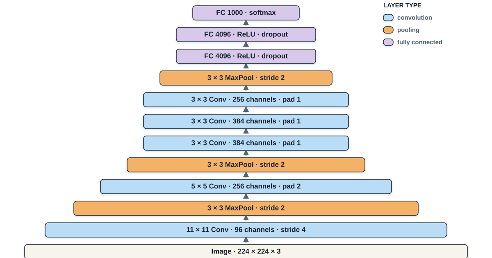
The architecture worked, but it left open questions. Must every layer be designed individually? Can depth be increased systematically? Can the classifier avoid spending most of the parameters? Can information follow shorter routes through a deep model?
2 VGG: depth through repeated small blocks
The VGG study treated architecture design as a controlled experiment (Simonyan and Zisserman 2015). Across configurations A through E, the local recipe remains stable while learned depth increases. This makes depth an experimental variable rather than an accidental consequence of unrelated layer choices.
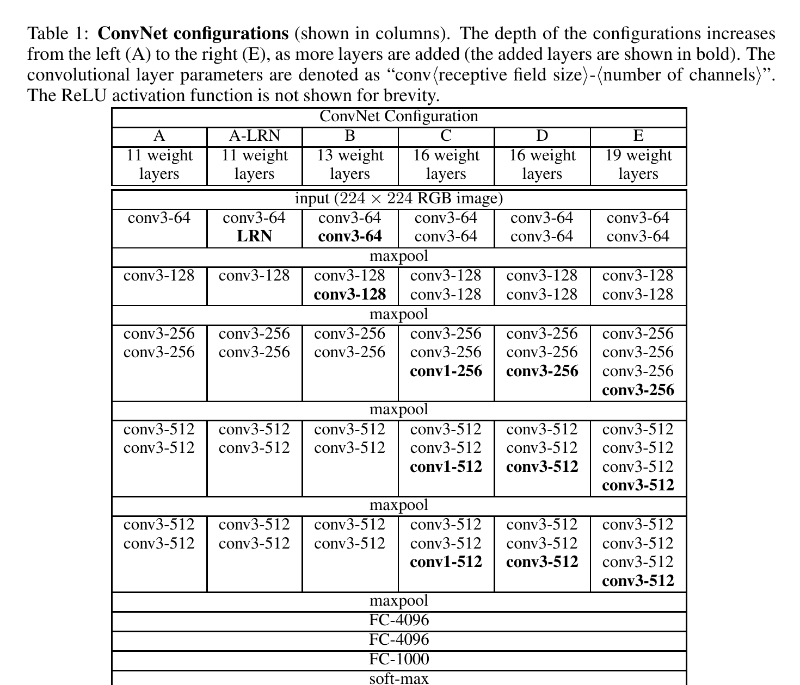
Read the original VGG paper. The authors’ Visual Geometry Group project page also provides the original model information.
2.1 Why repeated \(3\times3\) convolutions?
Two padded \(3\times3\) convolutions have an effective receptive field of \(5\times5\); three have an effective receptive field of \(7\times7\). Stacking small kernels has two advantages:
- it inserts a nonlinearity after every convolution;
- it often uses fewer parameters than one equally wide large kernel.
For equal input and output width \(C\), one \(5\times5\) convolution uses approximately \(25C^2\) weights. Two \(3\times3\) convolutions use approximately \(18C^2\) weights. The comparison is not exact when intermediate channel widths differ, but it explains the design pressure.
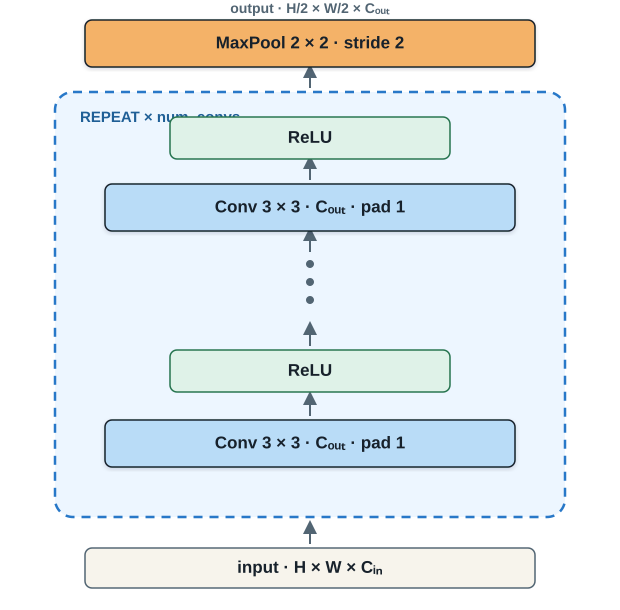
The block preserves \(H\times W\) while extracting features, then pooling halves the spatial resolution. This ordering matters: the model performs several learned transformations before discarding spatial detail.
import torch
from torch import nn
def vgg_block(num_convs: int, out_channels: int) -> nn.Sequential:
layers = []
for _ in range(num_convs):
layers.extend([
nn.LazyConv2d(out_channels, kernel_size=3, padding=1),
nn.ReLU(),
])
layers.append(nn.MaxPool2d(kernel_size=2, stride=2))
return nn.Sequential(*layers)The Conv2d documentation defines the channel, kernel, stride, and padding contract. Sequential is appropriate because each operation has exactly one successor.
2.2 The full model becomes a short specification
class VGG(nn.Module):
def __init__(self, arch, num_classes=10):
super().__init__()
blocks = [vgg_block(n, c) for n, c in arch]
self.net = nn.Sequential(
*blocks,
nn.Flatten(),
nn.LazyLinear(4096), nn.ReLU(), nn.Dropout(0.5),
nn.LazyLinear(4096), nn.ReLU(), nn.Dropout(0.5),
nn.LazyLinear(num_classes),
)
def forward(self, x):
return self.net(x)
vgg11 = ((1, 64), (1, 128), (2, 256), (2, 512), (2, 512))
model = VGG(vgg11)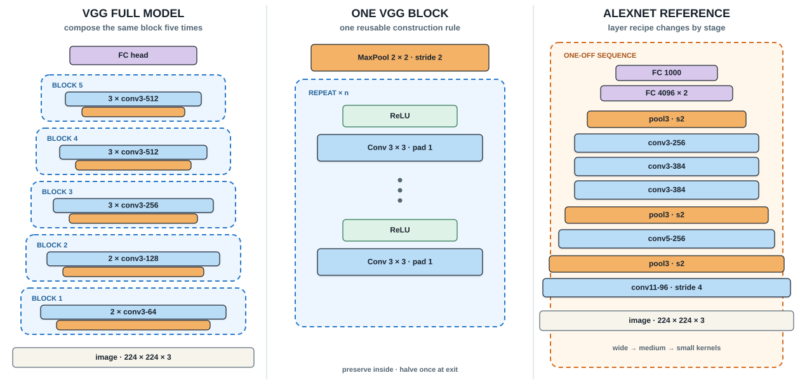
VGG’s contribution is methodological: standardize the local rule, then express the architecture as a sequence of block settings. Its principal drawbacks are the expensive dense classifier, high convolutional cost, and a plain information path through increasing depth.
3 NiN: learn within each spatial location
Network in Network (NiN) responds to two VGG-era costs: limited channel interaction inside a convolutional stage and a very large dense classifier (Lin et al. 2014). Read the original NiN paper.
3.1 A \(1\times1\) convolution is a learned channel mixer
At a fixed spatial position \((h,w)\), a \(1\times1\) convolution computes
\[ y_{o,h,w}=b_o+\sum_{c=1}^{C_{in}}W_{o,c}x_{c,h,w}. \]
It does not collect neighboring pixels. It learns a new combination of the channels already available at that location. With an activation after each \(1\times1\) convolution, the block becomes a small multilayer perceptron shared across all spatial positions.
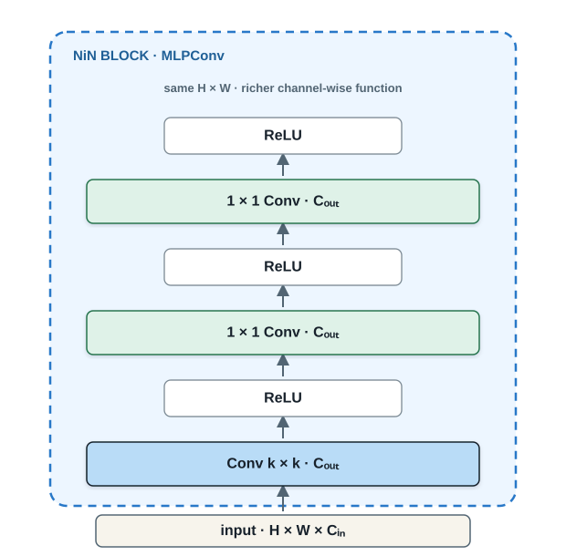
def nin_block(out_channels, kernel_size, stride, padding):
return nn.Sequential(
nn.LazyConv2d(out_channels, kernel_size, stride, padding), nn.ReLU(),
nn.LazyConv2d(out_channels, kernel_size=1), nn.ReLU(),
nn.LazyConv2d(out_channels, kernel_size=1), nn.ReLU(),
)3.2 Replace the dense head with class evidence maps
NiN’s final block emits num_classes channels. Channel \(k\) becomes a spatial evidence map for class \(k\). Global average pooling then converts each map into one scalar:
\[ s_k=\frac{1}{HW}\sum_{h=1}^{H}\sum_{w=1}^{W}A_{k,h,w}. \]
This gives the head an interpretable contract: one map per class, one average per map. PyTorch’s AdaptiveAvgPool2d can force the output to \(1\times1\) regardless of the incoming spatial size.
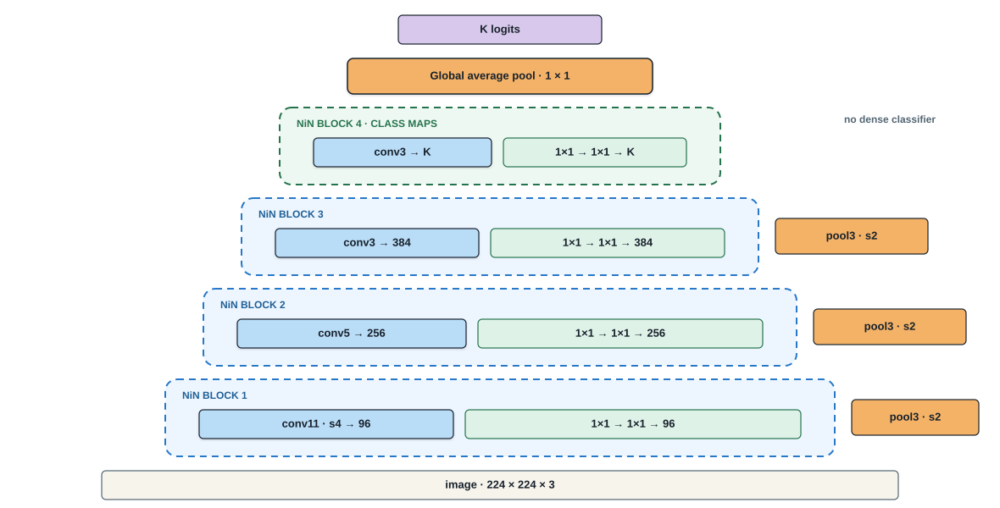
class NiN(nn.Module):
def __init__(self, num_classes=10):
super().__init__()
self.net = nn.Sequential(
nin_block(96, 11, 4, 0), nn.MaxPool2d(3, stride=2),
nin_block(256, 5, 1, 2), nn.MaxPool2d(3, stride=2),
nin_block(384, 3, 1, 1), nn.MaxPool2d(3, stride=2),
nn.Dropout(0.5),
nin_block(num_classes, 3, 1, 1),
nn.AdaptiveAvgPool2d((1, 1)),
nn.Flatten(),
)
def forward(self, x):
return self.net(x)NiN makes channel mixing explicit and removes the dense head, but its early stages still commit to one kernel size and one sequential route.
4 Inception: branch across spatial scales
An Inception block asks several spatial questions in parallel. Instead of choosing one receptive-field size in advance, it evaluates \(1\times1\), \(3\times3\), \(5\times5\), and pooled evidence, then concatenates their outputs along the channel dimension (Szegedy et al. 2015). Read the original GoogLeNet paper.
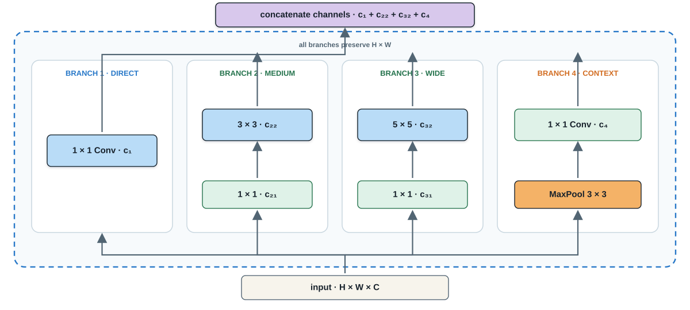
If every branch preserves \(H\times W\), concatenation is legal and the output channel count is
\[ C_{out}=c_1+c_{22}+c_{32}+c_4. \]
The \(1\times1\) operations before the wider kernels are capacity valves. A direct \(5\times5\) convolution from \(C_{in}\) to \(C_{out}\) uses \(25C_{in}C_{out}\) weights. Reducing first to \(C_r\) channels changes the approximate cost to
\[ C_{in}C_r+25C_rC_{out}. \]
When \(C_r\ll C_{in}\), the saving can be substantial.
class Inception(nn.Module):
def __init__(self, c1, c2, c3, c4):
super().__init__()
self.b1 = nn.Sequential(
nn.LazyConv2d(c1, 1), nn.ReLU())
self.b2 = nn.Sequential(
nn.LazyConv2d(c2[0], 1), nn.ReLU(),
nn.LazyConv2d(c2[1], 3, padding=1), nn.ReLU())
self.b3 = nn.Sequential(
nn.LazyConv2d(c3[0], 1), nn.ReLU(),
nn.LazyConv2d(c3[1], 5, padding=2), nn.ReLU())
self.b4 = nn.Sequential(
nn.MaxPool2d(3, stride=1, padding=1),
nn.LazyConv2d(c4, 1), nn.ReLU())
def forward(self, x):
return torch.cat(
[self.b1(x), self.b2(x), self.b3(x), self.b4(x)], dim=1)torch.cat concatenates tensors along an existing dimension. For NCHW images, dim=1 is the channel dimension. Batch size, height, and width must agree across branches.
4.1 GoogLeNet compresses the block into a reusable symbol
Once the internal four-branch contract is understood, a full network can treat each Inception block as one module. GoogLeNet uses nine such blocks in groups of two, five, and two, with pooling between groups and global average pooling in the head.
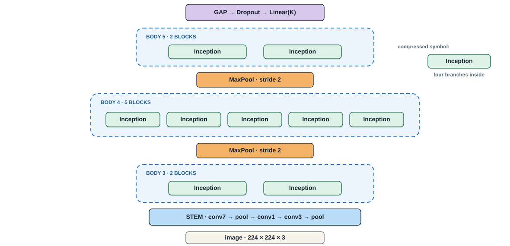
The architecture gains multi-scale processing and parameter-efficient wide branches. The cost is specification complexity: every branch requires channel choices, parallel execution can be hardware-sensitive, and the original model used auxiliary classifiers during training.
5 ResNet: learn a residual correction
Adding layers to a plain network does not guarantee lower training error. The original ResNet paper compared 20- and 56-layer plain networks on CIFAR-10; the deeper plain network had higher training error (He et al. 2016). This is an optimization failure, not merely overfitting.
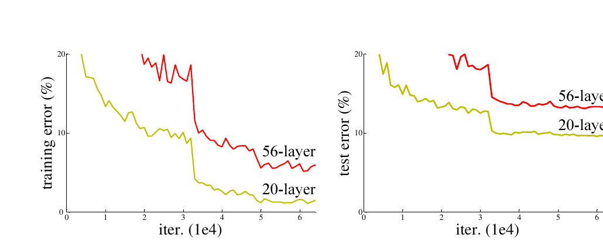
Read the original ResNet paper or the CVPR open-access version.
5.1 Reparameterize the desired mapping
Suppose the desired block mapping is \(H(x)\). A plain stack attempts to learn \(H\) directly. A residual block instead learns
\[ F(x)=H(x)-x, \]
and returns
\[ y=F(x)+x. \]
If the best transformation is close to identity, setting \(F(x)\approx0\) is easier than forcing several nonlinear layers to reproduce \(x\) exactly.
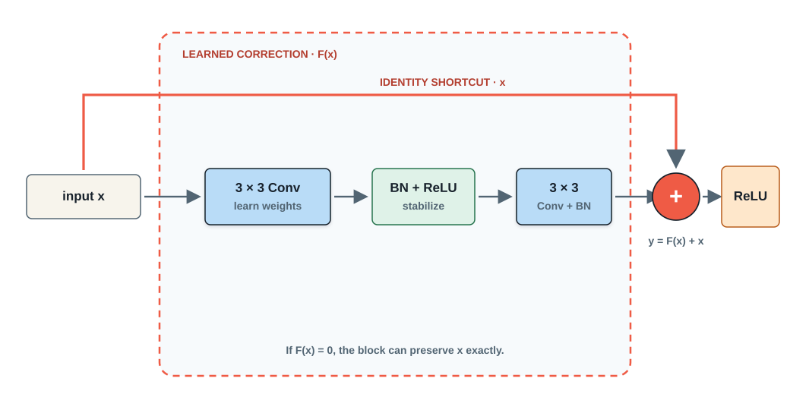
The shortcut also creates a direct route for information and gradients. It does not eliminate every optimization difficulty, but it changes the geometry of the problem and makes identity preservation structurally available.
5.2 Identity versus projection shortcuts
Elementwise addition requires equal shapes. When the residual branch preserves \((H,W,C)\), the shortcut should normally remain the free identity. At a stage boundary, the main path may halve spatial resolution and increase channels. A \(1\times1\) projection applies the same stride and maps the shortcut to the required channel count.
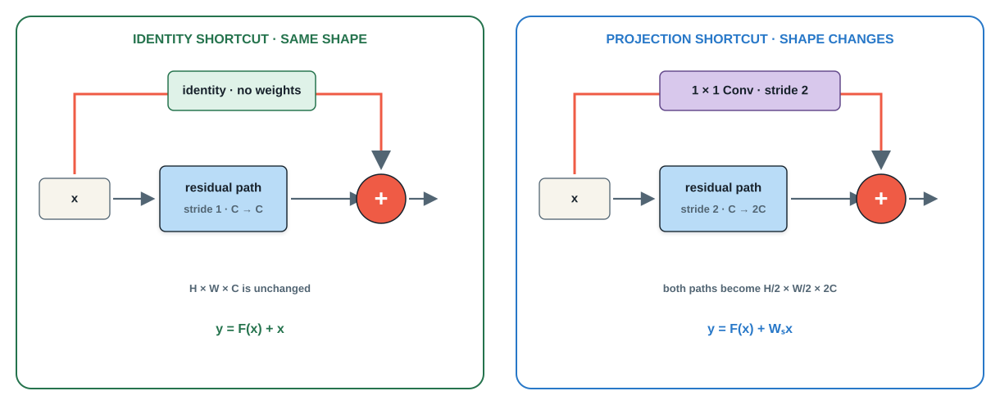
class ResidualBlock(nn.Module):
def __init__(self, in_ch, out_ch, stride=1, use_projection=False):
super().__init__()
self.main = nn.Sequential(
nn.Conv2d(in_ch, out_ch, 3, stride,
padding=1, bias=False),
nn.BatchNorm2d(out_ch), nn.ReLU(),
nn.Conv2d(out_ch, out_ch, 3,
padding=1, bias=False),
nn.BatchNorm2d(out_ch),
)
self.shortcut = (
nn.Conv2d(in_ch, out_ch, 1, stride, bias=False)
if use_projection else None
)
def forward(self, x):
identity = x if self.shortcut is None else self.shortcut(x)
return torch.relu(self.main(x) + identity)BatchNorm2d normalizes each channel using batch statistics during training and running estimates during evaluation. Its placement differs in later pre-activation ResNets; this chapter follows the original basic post-activation teaching block.
Before every residual addition, write the shapes of both operands. If either spatial resolution or channel count differs, an identity shortcut cannot be added directly.
6 DenseNet: preserve the full feature history
ResNet combines a learned correction and a preserved signal by addition. DenseNet makes a different choice: each layer receives the concatenation of all preceding feature maps, and its output remains available to all subsequent layers (Huang et al. 2017).
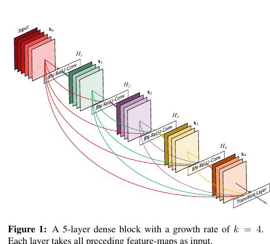
Read the original DenseNet paper, the CVPR open-access paper, or the authors’ reference implementation.
6.1 The dense contract
For layer \(\ell\), define the collective input
\[ z_\ell=[x_0,x_1,\ldots,x_{\ell-1}], \]
where brackets denote channel concatenation. The layer contributes
\[ x_\ell=H_\ell(z_\ell). \]
If the block begins with \(C_0\) channels and every layer contributes \(k\) new maps, then after \(L\) layers
\[ C_L=C_0+Lk. \]
The value \(k\) is the growth rate. Dense layers can remain narrow because they do not need to recreate useful earlier features.
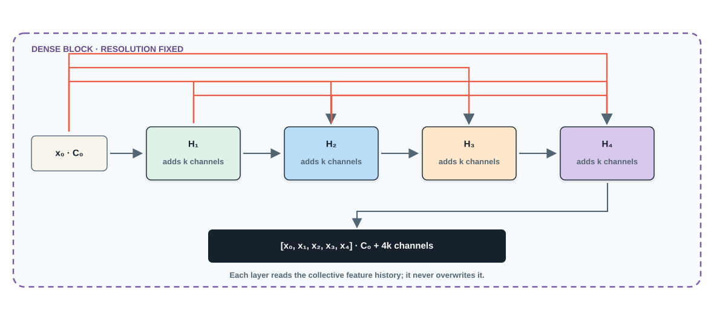
6.1.1 Numerical growth example
Let \(C_0=8\), \(k=4\), and \(L=4\). The channel counts after successive layers are
\[ 8\rightarrow12\rightarrow16\rightarrow20\rightarrow24. \]
The block contains 24 output channels, but the fourth layer itself computes only four new maps.
6.2 Transition layers cool channel growth
Dense concatenation widens the representation continuously. A transition layer commonly applies a \(1\times1\) convolution followed by \(2\times2\) average pooling. With compression factor \(0<\theta\le1\), the transition emits
\[ C_{transition}=\lfloor\theta C\rfloor \]
channels and halves spatial resolution. Compression controls capacity and memory; it should not be confused with regularization. The paper also uses dropout in some small-dataset experiments to reduce feature co-adaptation.
6.3 PyTorch implementation
class DenseLayer(nn.Module):
def __init__(self, in_ch, growth_rate):
super().__init__()
self.transform = nn.Sequential(
nn.BatchNorm2d(in_ch), nn.ReLU(),
nn.Conv2d(in_ch, growth_rate, 3,
padding=1, bias=False),
)
def forward(self, x):
new_features = self.transform(x)
return torch.cat([x, new_features], dim=1)
def dense_block(in_ch, num_layers, growth_rate):
layers = []
for i in range(num_layers):
current_channels = in_ch + i * growth_rate
layers.append(DenseLayer(current_channels, growth_rate))
return nn.Sequential(*layers)For dense_block(64, 4, 32), the output width is
\[ 64+4(32)=192\text{ channels}. \]
DenseNet creates short routes, encourages feature reuse, and can be parameter-efficient. Its principal systems cost is activation memory and data movement: earlier maps must remain available, and repeated concatenation is not free.
7 The architecture toolkit
The chapter’s five families can be summarized as operations rather than model names.
| Family | Reusable operation | Pressure addressed | Main tradeoff |
|---|---|---|---|
| VGG | Repeat a uniform small-kernel block | Systematic depth | High convolutional cost |
| NiN | Mix channels with \(1\times1\) convolutions | Local cross-channel interaction and compact heads | Rigid class-map head |
| Inception | Branch across receptive-field sizes | Multi-scale evidence | Hand-tuned branch complexity |
| ResNet | Add a correction to an identity path | Stable deep optimization | Addition requires shape alignment |
| DenseNet | Concatenate the full feature history | Explicit feature reuse and short paths | Activation memory and channel growth |
These mechanisms are compatible. A modern model may use repeated stages, bottleneck \(1\times1\) convolutions, parallel branches, residual additions, and selective concatenation in the same architecture.
8 Compose mechanisms for a task
Suppose the design brief is:
Classify ten plant diseases from mobile photographs. Lesions may be small, compute is limited, and the network must be deep enough to learn complex texture while remaining trainable.
A defensible first design could combine:
- VGG’s repetition: a regular stem of padded \(3\times3\) convolutions.
- Inception’s branching: a multi-scale stage for lesions of different apparent sizes.
- ResNet’s addition: identity shortcuts through deeper stages.
- NiN’s head: class maps followed by global average pooling.
Dense concatenation is not intrinsically wrong for this task. It is omitted from this first proposal because its activation-memory cost conflicts with the mobile constraint. A different deployment budget could change that decision.
The design loop is:
\[ \text{specification} \rightarrow\text{pressure} \rightarrow\text{mechanism} \rightarrow\text{evidence}. \]
Architecture names help us trace ideas historically. A model design, however, should be justified as a composition of mechanisms chosen for a task.
9 Check your understanding
9.1 Exercise 1: VGG receptive field and parameters
Two consecutive convolutions use \(3\times3\) kernels, stride one, padding one, and 64 input/output channels. Determine their effective receptive field and compare their weight count with one \(5\times5\) convolution from 64 to 64 channels. Ignore biases.
Worked solution
Two stride-one \(3\times3\) convolutions produce an effective \(5\times5\) receptive field. Their weight count is
\[ 2(3\cdot3\cdot64\cdot64)=73{,}728. \]
One \(5\times5\) convolution uses
\[ 5\cdot5\cdot64\cdot64=102{,}400 \]
weights. The stacked version uses fewer weights and inserts an additional nonlinearity.9.2 Exercise 2: Inception output channels
An Inception block emits 64 channels from its direct \(1\times1\) branch, 128 from its \(3\times3\) branch, 32 from its \(5\times5\) branch, and 32 from its pooling branch. What is the output shape for input (N, 192, 28, 28) if every branch preserves resolution?
Worked solution
Concatenation adds channel counts:
\[ C_{out}=64+128+32+32=256. \]
The output shape is(N, 256, 28, 28).
9.3 Exercise 3: choose a residual shortcut
For each transition, decide whether the shortcut can be identity or requires projection.
(N, 64, 32, 32)to(N, 64, 32, 32)(N, 64, 32, 32)to(N, 128, 16, 16)
Worked solution
- The shapes agree, so an identity shortcut is valid.
- Channels and spatial dimensions change. Use a \(1\times1\) projection with stride two to produce
(N, 128, 16, 16)before addition.
9.4 Exercise 4: DenseNet growth
A dense block begins with 96 channels, contains six layers, and uses growth rate \(k=24\). Find its output channels. If a transition uses \(\theta=0.5\), how many channels remain after compression?
Worked solution
The dense block emits
\[ C_6=96+6(24)=240 \]
channels. Compression gives
\[ \lfloor0.5(240)\rfloor=120 \]
channels.10 Further reading and implementation links
- AlexNet: ImageNet Classification with Deep Convolutional Neural Networks
- VGG: Very Deep Convolutional Networks for Large-Scale Image Recognition
- Network in Network
- GoogLeNet: Going Deeper with Convolutions
- ResNet: Deep Residual Learning for Image Recognition
- DenseNet: Densely Connected Convolutional Networks
- PyTorch
nn.Module - PyTorch
nn.Sequential - PyTorch
nn.ModuleList - PyTorch
Conv2d - PyTorch
BatchNorm2d - PyTorch
MaxPool2d - PyTorch
AdaptiveAvgPool2d - PyTorch
Dropout - PyTorch
torch.cat - PyTorch tutorial: What is
torch.nnreally?